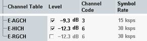

This section configures the downlink channels related to HSUPA: E-AGCH, E-HICH and E-RGCH.
Channels transmitted via downlink carrier 1 control primary uplink carrier, channels transmitted via downlink carrier 2 control secondary uplink carrier of the HSUPA connection. For switching between the carriers, see "Select Carrier".

Defines the level of a channel relative to the base level of the generator (see "Output Power (Ior)").
The checkboxes activate or deactivate the individual channels. The E-RGCH cannot be active without the E-HICH.
The E-HICH and the E-RGCH have the same configured power level. Configuring the E-HICH level configures also the E-RGCH level.
In a scenario with dual uplink carrier, individual values can be set per carrier.
Option R&S CMW-KS401 is required.
Option R&S CMW-KS405 is also required for dual carrier HSPA.
Remote command:Defines the channelization code number of a channel. The E-HICH and the E-RGCH use the same channelization code number. Configuring the E-HICH configures also the E-RGCH.
In a scenario with dual uplink carrier, individual values can be set per carrier.
Option R&S CMW-KS401 is required.
For background information, see "Channelization Codes"
Remote command:Displays the symbol rate of a channel. The values are fixed.
Option R&S CMW-KS401 is required.